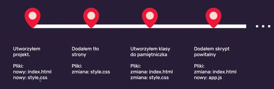

Jak działa terminal?
Każdy z systemów operacyjnych ma swój terminal.
Dobrze jest w VSC ustawić -> Shell command install ‘code’ command in PATH.
Na Windows w pasku start wyszukujemy -> cmd -> wiersz polecenia.
Komendy:
- dir wypisze to co mamy w katalogu, zawartości katalogu
- cd change directory, wyświetlenie aktualnej ścieżki
- cd C:\ przejście do głównego katalogu na dysku C
- cd .. przejście do katalogu wyżej
- cd nazwa-katalogu przejście do katalogu o nazwie nazwa-katalogu
- cd dev (d i tabulator)
- mkdir nazwa-katalogu tworzy się nowy plik o nazwie nazwa-katalogu
- code . odpala się VSC w aktualnym katalogu
Jest GIT!
GIT- system kontroli wersji (stworzył go Linux Torwards)- będziemy używać GITa jako maszynki do robienia zip-ów
- Pozwala na sprawne zarządzanie zmianami w projekcie, możemy robić zmiany w plikach a potem cofnąć się do stanu początkowego
- Możemy pracować nad projektem w grupie
- Działa lokalnie
- Do działania zdalnego potrzebuje serwera np.GitHub
- Znajomość podstaw GITa jest wymagana niezależnie od technologii
- Commitujemy jak dokładamy jakąś widoczną zmianę do projektu, lepiej częściej niż za mało
- Podstawowy flow: git add . / git commit -m”opis zmiany” / git push
git -- version - sprawdzamy czy git się zainstalował, podaje nam wersje gita
Konfiguracja:
git config --global user.name “Anna Śmierzchała”
git config --global user.email smierzchala.anna@gmail.com
sprawdzamy:
git config --get user.name /user.email
Zainstalował się też terminal: git bash i powershell jakby co
Repozytorium = projekt, czyli zawiera wszystkie pliki naszego projektu
W terminalu musimy wrócić do homepage, potem git init, i tworzy się ninja katalog którego nie widać .git
Commit = stan projektu na daną chwilę i opis tego co się zmieniło od ostatniego zapisu zapisuje historię zmian między poszczególnymi commitami
git status - no commit yet, nie śledzone pliki więc musimy dodać je do repozytorium, żeby je śledzić
Polecenia:
git add . - dodaj pliki
git status - pokazuje nowe pliki do zacommitowania
git commit -m “initial commit” - dodanie commita, opis zmian, opisy zrozumiałe, co zmieniliśmy
gitk - pokazuje historię commitów
dir / a zamiast ls a
cls zamiast clear,ctr c albo samo q cofa
Jak często commitować?
Na początku rób to często! Np. dodałem sekcje, dodałem style
Robię zmiany, sprawdzam stronę czy jest ok, git status, git add ., i git commit -m””, gitk
W VSC mamy narzędzie do commitowania też, ale lepiej korzystać z terminala/konsoli. Jest też rozszerzenie GitLens - pokazuje nam po kolei wszystkie commity.
Check pointy:
.gitignore
Zawiera zestaw reguł, które pozwalają nam na zdefiniowanie listy rzeczy, które nie powinny być w repozytorium np. plik z hasłami w sensie żeby nie były publiczne.
Dlatego tworzymy plik .gitignore i dodajemy tam nazwę pliku, która ma być nasza prywatna.
I nawet jak zrobimy git push to się doda tylko plik .gitignore, w którym będzie nazwa tego pliku, który chcieliśmy ukryć ale nikt nie będzi go widział co w nim jest.
Node.js
Node to taki javascript uruchamiany poza przeglądarką, oparty na silniku chromowym natomiast różnica między nodem tym co się dzieje w przeglądarce to to, że node nie ma dostępu do DOM i wszystkich API, konsolowy js
node skrypt.js
zakładamy nowy folder playground i nowy plik script.js dodajemy console log sprawdzamy terminal dir
node script.js wypisze to co pliku w środku, uruchamia nam plik
Zastosowanie noda jest bardzo szerokie można pisać też backend, całe aplikacje serwerowe, ale my będziemy korzystać z gotowych rzeczy.
NPM i NPX
Yarnto nie jest node package manager no no no, chociaż jest managerem do paczek, to takie repozytorium z którego możemy pobrać gotowe paczki które pomogą nam lepiej szybciej łatwiej wygodniej budować nasz projekt.
Po co nam te paczki:
-dodajemy do projektów sporo gotowych bibliotek/narzędzi
-nie można polegać na konfiguracji edytora/jego wtyczkach
-uniwersalne źródło, repozytorium ze wszystkimi narzędziami
-dostęp do aktualizacji
npm to taki app store/ sklep play dla frontendowca, jedno źródło z którego ściągamy rzeczy, taka skrzynka z narzędziami, których możemy użyć w naszym projekcie: narzędzie które nam ten projekt obsługują np. coś typu live serwer, drugi rodzaj pozwala nam na korzystanie z gotowych narzędzi już w naszym projekcie, wewnątrz np. normalize
npm init / npm init -y robimy tylko raz w projekcie, inicjuje nam projekt
dostajemy pytania możemy klikać enter, w vsc tworzy się plik package.json z obiektem w środku takie jakby const info = json to sposób zapisu obiektów javascriptowych, plik który zawiera strukturę javascriptową, strukturę obiektu, gdzie są informacje o naszym projekcie. Mamy tutaj taki bardzo podstawowy pakiet json ale musimy go założyć żeby korzystać z tego co oferuje npm.
w tej wersji z -y nie pojawiają się pytania i on wtedy wypełni domyślnie, tak jakbyśmy wciskali enter cały czas.
npm install <nazwa_paczki> --save albo --save-dev
npm install
install normalize.css, dodały się info do json zależności:dependencies
i nowy plik package-lock.json - on trzyma info o tym co zainstalowaliśmy, nie edytujemy go możemy go wrzucić do repozytorium, pilnuje żeby się zależności nie rozjeżdżały, plik który blokuje wersję. Plus pojawił się katalog node_modules i on ma normalize i ten normalize ma też swojego jsona.
node_modules moduły noudowe, paczki z których będziemy korzystać
jeśli chcemy, żeby nasza paczka była w jakiś sposób wykorzystywana w tym co widzimy w przeglądarce taki normalize css to taka paczka to używamy --save
a jeżeli będziemy instalować narzędzie do rozwoju oprogramowania, takie developerskie np. serwer lokalny to wtedy z przełącznikiem --save-save
jest też opcja npm install bez nazwy paczki
generalnie jak coś doinstaluje to nam się pojawi, też w tym samym katalogu node_modules
npm install instaluje rzeczy zdefiniowane w package.json i jak usuniemy node modules damy npm install to się znowu pojawi katalog z tym normalize i react np
czyli package.json trzyma info o tym jakie paczki są nam potrzebne do zbudowania i budowania naszej strony
node_modules mega ciężki katalog! nie commitujemy go, bo jak zrobimy package.json, gdzie będziemy trzymać info jakie paczki są potrzebne to tego nie musimy commitować i nie edytujemy nic w tych katalogach, tylko do odczytu
w terminalu git init robimy repozytorium, zakładamy .gitignore i git add git commit -m”initial commit”
alternatywa dla npm jest np Yarn https://classic.yarnpkg.com/en/ też taki manager pakietó, korzysta z tej samej bazy co npm, jak będziemy coś szukać to w obu znajdzie nam to same paczki
npx możemy korzystać z narzędzia bez instalowania go
npx cowsay siema
NPM Scripts
Skrypty npmowe to komendy, skróty które możemy zdefiniować w naszym pliku package,json, teraz jest zdefiniowana tylko jedna komenda test: i ona zwróci nam błąd gdyż testy są w tym momencie niezdefiniowane.
Rozbudowujemy obiekt scripts o inne komendy:
"scripts": {
"start": "node script.js",
w konsoli npm run start
"scripts": {
"cow": "cowsay hello",
npm run cow
jak krowa nie będzie zainstalowana to nam nie zadziała, musi być w node_modules